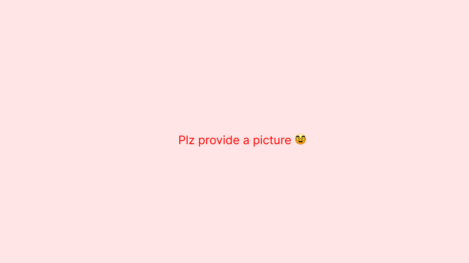

Mathis BESSON (Imasma)
Ma contribution sur le projet DaVinci
J'ai contribué a faire les rails de l'antagoniste, les lumières (lampe torche), le sound design et la musique. (Je suis une victime mettez moi une bonne note svp.)

Aide à faire les rails de l'antagoniste

capture 2
capture 3

capture 4